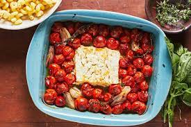

Feta Pasta is an easy recipe that requires roasting a block of feta cheese with cherry tomatoes.
<
Feta pasta
Ingredients
- 1 (8-oz.) block Feta
- 2 pt. cherry tomatoes
- 10 oz. pasta
- 1/2 c. extra-virgin olive oil
- 3 gloves garlic, smashed
- Kosher salt
- crushed red pepper flakes
- fresh basil
Directions
Im going to use a sup as a semantic element here...(use 2 elements)
- Preheat the oven to 400oF.
- In an 11-by-7inch baking dish, combine tomatoes, garlic, and salt. Coat with olive oil.
- Place feta in the middle of the dish and bake for 40 minutes.
- Boil pasta.
- Add pasta to the baking dish.
- Stir everything. Top with pepper, oil, and salt.